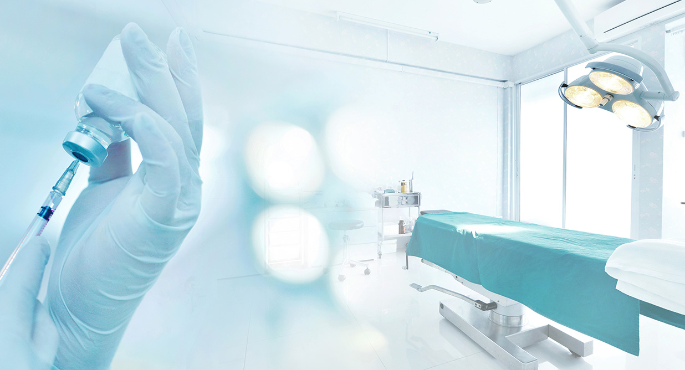

อัปเดตราคาศัลยกรรมในเกาหลี ทำจุดไหนจ่ายเท่าไหร่ ?
ราคาการทำศัลยกรรมนั้นแตกต่างกันไปขึ้นอยู่กับหลายปัจจัยไม่ว่าจะเป็น ความต้องการของคนไข้ ความยากของประเภทการทำศัลยกรรม และชื่อเสียงของศัลยแพทย์หรือโรงพยาบาล ทั้งนี้ทั้งนั้นเพื่อให้สามารถประเมินค่าใช่จ่ายในการทำศัลยกรรมเกาหลีราคาได้อย่างเหมาะสมและไม่บานปลาย วันนี้เราได้ศึกษาราคาทั่วไปของการทำศัลยกรรมในเกาหลีมาให้ได้พิจารณา จะเป็นศัลยกรรมโครงหน้าเกาหลี จมูก ตา หรือศัลยกรรมหน้าอกเกาหลี บทความนี้รวมไว้ให้หมดแล้ว
ศัลยกรรมเกาหลีราคานี้ทำอะไรได้บ้าง ? รู้ไว้เพื่อจัดการงบประมาณอย่างเหมาะสม
ก่อนอื่นมาเช็คราคาที่ประเมินมาแบบคร่าวๆกันก่อน แต่ให้จำไว้ว่านี้จะเป็นเพียงราคาประเมินแบบคร่าวๆ เพราะราคาอาจจะเพิ่มขึ้นหรือลดลงขึ้นยู่กับหลายๆ ปัจจัย ดังนี้
- ราคาโปรโมชั่นของทางโรงพยาบาล ณ ขณะนั้น
- ความยาก-ง่ายของการทำศัลยกรรมแต่ละบุคคลและแต่ละจุด
- ความผันผวนของค่าเงิน ณ ขณะนั้น
- ผลการประเมินของทางโรงพยาบาลหรือคลินิกว่าต้องมีการทำอะไรเสริมหรือเพิ่มเติมหรือไม่
-
ราคาศัลยกรรมหน้าอกเกาหลี โดยปกติหน้าอกจะเป็นส่วนที่ใช้เงินเยอะพอสมควร เพราะเป็นจุด sensitive และต้องทำสองข้างพร้อมๆกัน ทั้งนี้ราคาจะต่างกันไปตามประเภทของซิลิโคนที่ใช้ สำหรับปี 2023 ราคาจะตามนี้
- ทรงหยดน้ำ ราคา 10,000,000 วอน ( 300,000 บาท)
- ทรงกลม ราคา 10,000,000 วอน ( 300,000 บาท)
- Bella Gel ราคา 10,000,000- 15,000,000 วอน ( 300,000 - 450,000 บาท)
- Motiva ราคา 13,000,000- 17,500,000 วอน ( 390,000 - 525,000 บาท)
ในกรณีศัลยกรรมหน้าอกเกาหลีงานแก้ราคาจะสูงมาพอสมควร โดยอยู่ที่ 20,000,000 วอน (600,000 บาท)
-
ราคาศัลยกรรมโครงหน้าเกาหลี ที่เกาหลีจะเด่นในเรื่องนี้เป็นทุนเดิมอยู่แล้ว แต่ราคาจะถูกกว่าศัลยกรรมหน้าอกพอสมควร อีกทั้งหลายๆคลินิคและโรงพยาบาลค่อนข้างแข่งขันราคากัน ตอนนี้จึงได้ราคา ดังนี้
- ศัลยกรรมกราม ราคา 5,000,000- 8,500,000 วอน ( 150,000 - 255,000 บาท)
- ศัลยกรรมโหนกแก้ม ราคา 5,000,000- 8,500,000 วอน ( 150,000 - 255,000 บาท)
- ศัลยกรรมเลื่อนคราง ราคา 5,000,000- 8,500,000 วอน ( 150,000 - 255,000 บาท)
- ลดขนาดหน้าผาก ราคา 7.500,000 วอน ( 225,000 บาท)
- เสริมคาง ซิลิโคน 2,500,000- 4,500,000 วอน ( 75,000 - 135,000 บาท)
- ยกมุมปาก ราคา 4,000,000 วอน ( 120,000 บาท)
-
ศัลยกรรมจมูกเกาหลี ศัลยกรรมยอดนิยมที่ทำกันอย่างแพร่หลาย โดยที่ราคาในเกาหลีจะขึ้นอยู่กับว่าคนไข้ต้องการอะไรด้วย
- สันจมูกซิลิโคน ปลายจมูก ราคา 4,500,000- 6,000,000 วอน ( 135,000 - 180,000 บาท)
- เหลาฐานกระดูกจมูก ราคา 1,000,000- 3,500,000 วอน ( 30,000 - 105,000 บาท)
- ลดขนาดปีกจมูก ราคา 1,000,000- 3,500,000 วอน ( 30,000 - 45,000 บาท)
- จมูกฮัมพ์ ราคา 1,000,000- 1,500,000 วอน ( 30,000 - 45,000 บาท)
- ลดขนาดปีกจมูก ราคา 1,000,000-3,500,000 วอน ( 30,000 - 105,000 บาท)
- ศัลยกรรมแก้จมูก ราคา 6,000,000- 10,000,000 วอน ( ประมาณ 180,000 - 300,000 บาท)
-
ราคาศัลยกรรมปาก โดยส่วนใหญ่จะเป็นการแก้ไขปากให้ได้ทรงที่เหมาะสม อวบอิ่มมีวอลลุ่ม ดูดี ตามค่านิยมในปัจจุบัน โดยราคาศัลยกรรมปากจะมีดังต่อไปนี้
- ปากกระจับ (ปากบน) ราคา 9,000 - 15,999 บาท
- ปากบาง (ปางล่าง) ราคา 9,000 - 15,999 บาท
- ปากกระจับทั้งบนและล่าง ราคา 20,999
ทั้งหมดนี้เป็นราคาศัลยกรรมปากราคาเริ่มต้นโดยประมาณ ทั้งนี้ราคาอาจแปรผันโดยขึ้นอยู่กับปัจจัยที่ได้กล่าวมาข้างต้น
เลือกโรงพยาบาลสำหรับศัลยกรรมแบบไหนให้มีความเหมาะสม
ปัจจุบันมีศัลยกรรมหลากหลายประเภทให้เลือกทำตามความพึงพอใจของแต่ละบุคคล การเลือกโรงพยาบาลสำหรับศัลยกรรมจึงเป็นสิ่งสำคัญอย่างยิ่ง เพื่อให้ได้ผลลัพธ์ที่ตรงตามความต้องการและมีความปลอดภัย ในการเลือกโรงพยาบาลสำหรับศัลยกรรม ควรพิจารณาจากปัจจัยดังต่อไปนี้
- มาตรฐานของโรงพยาบาล โรงพยาบาลควรได้รับการรับรองมาตรฐานจากหน่วยงานที่เกี่ยวข้อง เช่น กระทรวงสาธารณสุข หรือแพทยสภา เพื่อให้มั่นใจได้ว่ามีมาตรฐานในการดูแลรักษาผู้ป่วย
- ทีมแพทย์และพยาบาล ทีมแพทย์และพยาบาลควรมีความเชี่ยวชาญและประสบการณ์ในการผ่าตัดศัลยกรรมประเภทนั้น ๆ เพื่อให้สามารถให้คำแนะนำและดูแลผู้ป่วยได้อย่างถูกต้อง
- อุปกรณ์และเครื่องมือ โรงพยาบาลควรมีอุปกรณ์และเครื่องมือที่ทันสมัยและครบครัน เพื่อให้การผ่าตัดเป็นไปอย่างมีประสิทธิภาพและปลอดภัย
- สถานที่และบรรยากาศ โรงพยาบาลควรมีสถานที่และบรรยากาศที่สะอาดและปลอดภัย เพื่อให้ผู้ป่วยรู้สึกผ่อนคลายและสบายใจ
การเลือกโรงพยาบาลสำหรับศัลยกรรมอย่างเหมาะสมจะช่วยให้ผู้ป่วยได้รับผลลัพธ์ที่ตรงตามความต้องการและปลอดภัย ดังนั้นจึงควรศึกษาข้อมูลและเปรียบเทียบโรงพยาบาลหลาย ๆ แห่งก่อนตัดสินใจ
